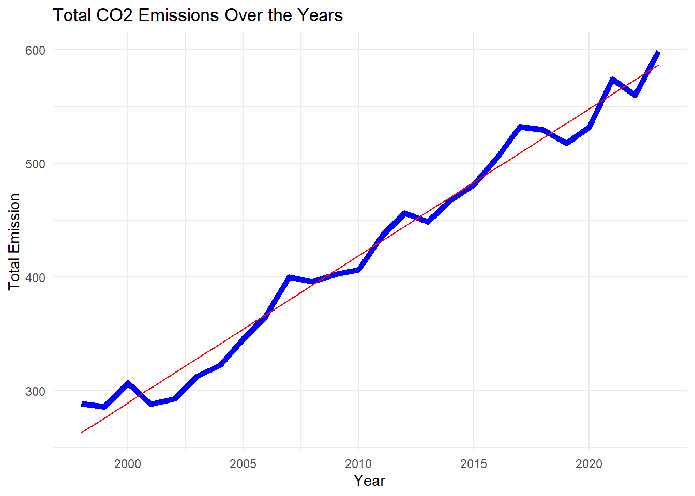
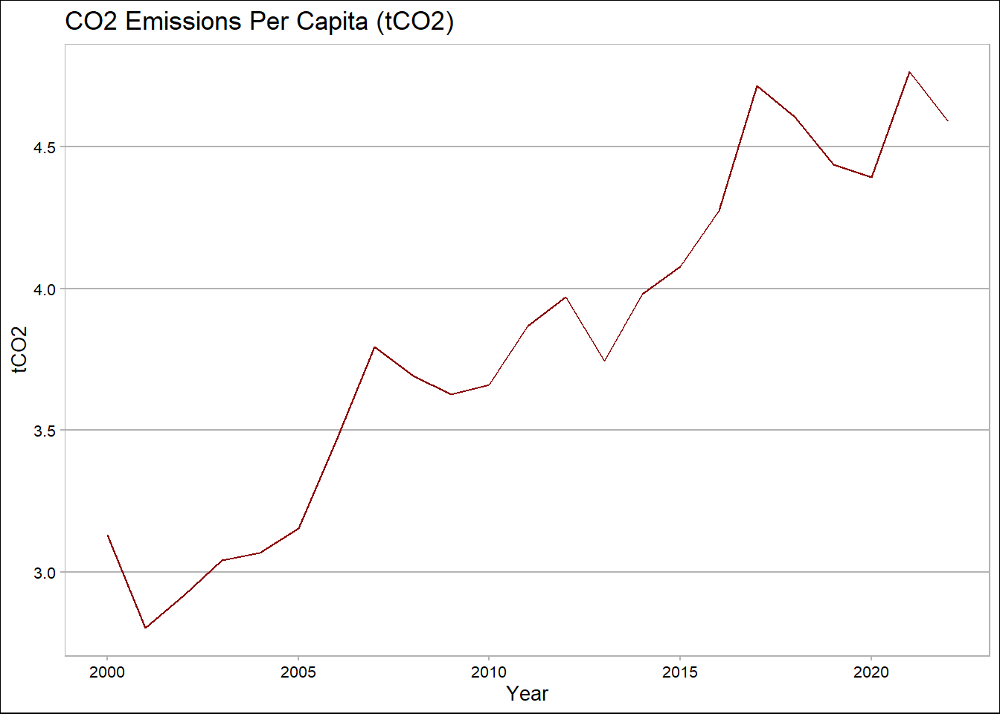
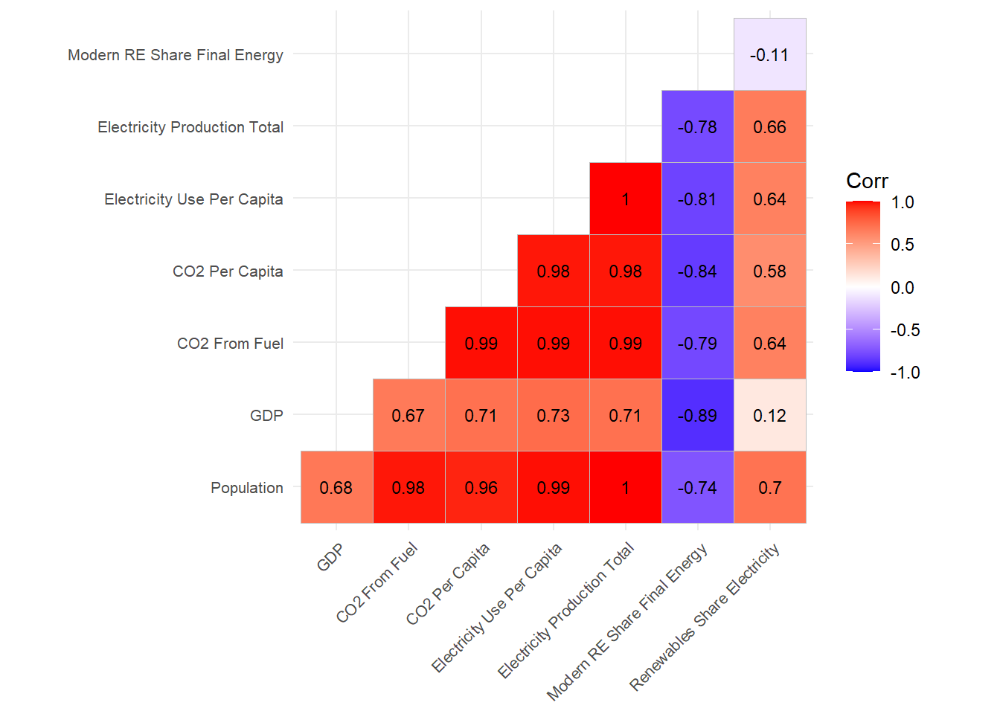

Sustainability Goals in Türkiye: Energy, Emissions, and the Future
1. Project Overview and Scope
Energy production and consumption are among the primary drivers of climate change, as they are major sources of carbon emissions. The continuous rise in energy demand, fueled by economic growth and industrialization, directly accelerates carbon emissions. In this study, we aim to investigate the relationship between energy consumption and carbon emissions originating from the energy sector in Turkey over the years.
First, correlation and regression analyses will be conducted to reveal the linear relationship between energy consumption and carbon emissions. Then, time series analysis will be applied to evaluate the trends of emissions and energy consumption over the years, the sectoral distribution of carbon emissions from the energy sector will also be examined, with a particular focus on emissions from electricity generation due to its dominant share.
Additionally, the relationships between key indicators—such as energy intensity (primary energy consumption/GDP), per capita energy consumption, and per capita carbon emissions—will be analyzed to assess the potential for decoupling carbon emissions from economic growth.
The data obtained from TÜİK provide information on the sectoral distribution of carbon emissions in Türkiye over the years, as well as GDP figures necessary for calculating energy intensity. Additionally, the data gathered from the IEA include Türkiye’s total primary energy supply, annual energy amounts by source, energy-related carbon emissions, the carbon intensity of the energy mix, per capita carbon emissions, electricity generation and consumption figures, and the share of renewable energy sources in electricity generation.
2.3 Reason of Choice
This study has been selected with the aim of contributing to sustainable development goals in line with energy and climate policies.
In order to shed light on the extent to which carbon-free growth is achievable and how Turkey’s trends over the years align with these goals, this topic has been chosen from the perspectives of energy, environment, and society, particularly given that energy-related emissions constitute a major portion of global warming.
Raising awareness on this issue is also one of the primary motivations behind the study.
library(readr)library(readxl)library(dplyr)library(ggplot2)library(reshape2)library(tidyverse)library(ggthemes)library(knitr)Co2_emissions_by_sector <-read_csv("C:/Users/DELL/Documents/GitHub/emu660-spring2025-NimetSevinc/project_data/International Energy Agency - CO2 emissions by sector in Türkiye.csv") |>rename("CO2 emissions by sector"="CO2 emissions by sector in Türkiye") |>select(-4)kable(head(Co2_emissions_by_sector))
CO2 emissions by sector
Value
Year
Electricity and heat producers
68.358
2000
Electricity and heat producers
69.831
2001
Electricity and heat producers
64.531
2002
Electricity and heat producers
65.531
2003
Electricity and heat producers
66.620
2004
Electricity and heat producers
74.515
2005
Code
Co2_emissions_fuel_combustion <-read_csv("C:/Users/DELL/Documents/GitHub/emu660-spring2025-NimetSevinc/project_data/International Energy Agency - CO2 emissions from fuel combustion, Türkiye (1).csv") |>rename("CO2 emissions from fuel combustion"="CO2 emissions from fuel combustion, Türkiye") |>select(-3)kable(head(Co2_emissions_fuel_combustion))
Year
CO2 emissions from fuel combustion
2000
201.216
2001
182.681
2002
192.597
2003
203.138
2004
207.391
2005
215.883
Code
Co2_emissions_per_cap <-read_csv("C:/Users/DELL/Documents/GitHub/emu660-spring2025-NimetSevinc/project_data/International Energy Agency - CO2 emissions per capita, Türkiye.csv") |>rename("CO2 emissions per capita"="CO2 emissions per capita, Türkiye") |>select(-3)head(Co2_emissions_per_cap)
electricity_cons_per_cap <-read_csv("C:/Users/DELL/Documents/GitHub/emu660-spring2025-NimetSevinc/project_data/International Energy Agency - Electricity consumption per capita, Türkiye.csv") |>rename("Electricity consumption per capita (MWh)"="Electricity consumption per capita, Türkiye") |>select(-3)head(electricity_cons_per_cap)
electricity_final_consumption <-read_csv("C:/Users/DELL/Documents/GitHub/emu660-spring2025-NimetSevinc/project_data/International Energy Agency - electricity final consumption by sector in Türkiye.csv") |>rename("Electricity final consumption (TJ)"="electricity final consumption by sector in Türkiye") |>na.omit(electricity_final_consumption) |>select(-4)head(electricity_final_consumption)
# A tibble: 6 × 3
`Electricity final consumption (TJ)` Value Year
<chr> <dbl> <dbl>
1 Industry 165920 2000
2 Industry 161992 2001
3 Industry 175953 2002
4 Industry 193309 2003
5 Industry 208951 2004
6 Industry 218415 2005
Code
electricity_generation_sources <-read_csv("C:/Users/DELL/Documents/GitHub/emu660-spring2025-NimetSevinc/project_data/International Energy Agency - electricity generation sources in Türkiye.csv") |>rename("Electricity generation sources (GWh)"="electricity generation sources in Türkiye") |>na.omit(electricity_generation_sources) |>select(-4)head(electricity_generation_sources)
modern_renewables <-read_csv("C:/Users/DELL/Documents/GitHub/emu660-spring2025-NimetSevinc/project_data/International Energy Agency - Share of modern renewables in final energy consumption (SDG 7.2), Türkiye (1).csv") |>rename("Modern renewables(%)"="Share of modern renewables in final energy consumption (SDG 7.2), Türkiye") |>select(-3)head(modern_renewables)
total_energy_supply <-read_csv("C:/Users/DELL/Documents/GitHub/emu660-spring2025-NimetSevinc/project_data/International Energy Agency - total energy supply in Türkiye (2).csv") |>rename("Total energy supply (TJ)"="total energy supply in Türkiye") |>select(-4)head(total_energy_supply)
# A tibble: 6 × 3
`Total energy supply (TJ)` Value Year
<chr> <dbl> <dbl>
1 Coal 956056 2000
2 Coal 789821 2001
3 Coal 820271 2002
4 Coal 923904 2003
5 Coal 930636 2004
6 Coal 937372 2005
emissions_by_sector <-read_excel("C:/Users/DELL/Documents/GitHub/emu660-spring2025-NimetSevinc/project_data/sektorlere gore toplam sera gazi emisyonlari (co2 esdegeri) (1).xlsx") |>select(-3) |>slice(-1:-8)head(emissions_by_sector)
# A tibble: 6 × 4
Source Year Month Value
<chr> <dbl> <chr> <dbl>
1 Hard Coal + Imported Coal 2020 JANUARY 6640.
2 Hard Coal + Imported Coal 2020 FEBRUARY 5806.
3 Hard Coal + Imported Coal 2020 MARCH 5218.
4 Hard Coal + Imported Coal 2020 APRIL 2903.
5 Hard Coal + Imported Coal 2020 MAY 3544.
6 Hard Coal + Imported Coal 2020 JUNE 5917.
# A tibble: 6 × 4
Source Year Month Value
<chr> <dbl> <chr> <dbl>
1 Hard Coal + Imported Coal 2021 JANUARY 5939.
2 Hard Coal + Imported Coal 2021 FEBRUARY 5855.
3 Hard Coal + Imported Coal 2021 MARCH 5058.
4 Hard Coal + Imported Coal 2021 APRIL 3863.
5 Hard Coal + Imported Coal 2021 MAY 3922.
6 Hard Coal + Imported Coal 2021 JUNE 4457.
# A tibble: 6 × 4
Source Year Month Value
<chr> <dbl> <chr> <dbl>
1 Hard Coal + Imported Coal 2022 JANUARY 6473.
2 Hard Coal + Imported Coal 2022 FEBRUARY 5655.
3 Hard Coal + Imported Coal 2022 MARCH 4467.
4 Hard Coal + Imported Coal 2022 APRIL 3149.
5 Hard Coal + Imported Coal 2022 MAY 3264.
6 Hard Coal + Imported Coal 2022 JUNE 4723.
# A tibble: 6 × 4
Source Year Month Value
<chr> <dbl> <chr> <dbl>
1 Hard Coal + Imported Coal 2023 JANUARY 7446.
2 Hard Coal + Imported Coal 2023 FEBRUARY 6013.
3 Hard Coal + Imported Coal 2023 MARCH 6217.
4 Hard Coal + Imported Coal 2023 APRIL 4155.
5 Hard Coal + Imported Coal 2023 MAY 4742.
6 Hard Coal + Imported Coal 2023 JUNE 5716.
# A tibble: 6 × 4
Source Year Month Value
<chr> <dbl> <chr> <dbl>
1 Hard Coal + Imported Coal 2024 JANUARY 6798.
2 Hard Coal + Imported Coal 2024 FEBRUARY 6836.
3 Hard Coal + Imported Coal 2024 MARCH 6622.
4 Hard Coal + Imported Coal 2024 APRIL 3761.
5 Hard Coal + Imported Coal 2024 MAY 4941.
6 Hard Coal + Imported Coal 2024 JUNE 6048.
# A tibble: 6 × 4
Source Year Month Value
<chr> <int> <chr> <dbl>
1 Hard Coal + Imported Coal 2020 JANUARY 6640.
2 Hard Coal + Imported Coal 2020 FEBRUARY 5806.
3 Hard Coal + Imported Coal 2020 MARCH 5218.
4 Hard Coal + Imported Coal 2020 APRIL 2903.
5 Hard Coal + Imported Coal 2020 MAY 3544.
6 Hard Coal + Imported Coal 2020 JUNE 5917.
Code
with_carbon_emissions <- electric_data_all |>mutate(carbon_emissions_katsayı =case_when(Year ==2020& Source =="Hard Coal + Imported Coal"~0.909, Year ==2020& Source =="Lignite"~1.115, Year ==2020& Source =="Liquid Fuels"~0.614, Year ==2020& Source =="Naturl Gas +Lng"~0.363, Year ==2020& Source =="THERMAL"~0.789, Year ==2021& Source =="Hard Coal + Imported Coal"~0.9, Year ==2021& Source =="Lignite"~1.152, Year ==2021& Source =="Liquid Fuels"~0.683, Year ==2021& Source =="Naturl Gas +Lng"~0.374, Year ==2021& Source =="THERMAL"~0.806, Year ==2022& Source =="Hard Coal + Imported Coal"~0.911, Year ==2022& Source =="Lignite"~1.177, Year ==2022& Source =="Liquid Fuels"~1.128, Year ==2022& Source =="Naturl Gas +Lng"~0.374, Year ==2022& Source =="THERMAL"~0.95, Year ==2023& Source =="Hard Coal + Imported Coal"~0.906, Year ==2023& Source =="Lignite"~1.148, Year ==2023& Source =="Liquid Fuels"~1.0, Year ==2023& Source =="Naturl Gas +Lng"~0.370, Year ==2023& Source =="THERMAL"~0.95, Year ==2024& Source =="Hard Coal + Imported Coal"~0.910, Year ==2024& Source =="Lignite"~1.150, Year ==2024& Source =="Liquid Fuels"~1.10, Year ==2024& Source =="Naturl Gas +Lng"~0.375, Year ==2024& Source =="THERMAL"~0.95, Source %in%c("Renew and Wastes", "HYDRO","GEOTHERMAL + WIND +SOLAR") ~0))
In the first stage of this section, exploratory data analysis was conducted to better understand the details of the data. The datasets prepared for the analysis were visualized to make them interpretable and suitable for drawing insights. After understanding the data details and their relationships, time series and regression analyses were applied to make predictions about CO2 emissions.
3.1 Exploratory Data Analysis
When examining the change in CO2 emissions over the years, an increasing trend is observed. Population growth also plays a role in this rise.
Emissions from the electricity sector have increased significantly, reaching the highest levels among all sectors. This is followed by the transportation and industry sectors, both with high emission values. Emissions related to the residential sector have increased at a slower pace. Emission values in other sectors remain relatively low.
The change in total carbon emissions over the years in Turkey has been analyzed along with the trend line.
Code
emissions_by_sector |>ggplot(aes(x=Year, y=Total)) +geom_line(color="blue", size=2) +theme_minimal() +ggtitle("Total CO2 Emissions Over the Years") +ylab("Total Emission") +geom_smooth(method="lm", se=FALSE, color="red", size=0.5)

We observe that the industrial sector is the largest consumer of electricity. The residential and commercial sectors also have high levels of electricity consumption. In recent years, with the increasing use of electric vehicles, small increases have been observed in the transportation sector. In contrast, almost no increase has been seen in the agriculture and fisheries sectors. The low electricity consumption in these two sectors despite population growth may indicate a decline in their operational capacity.
Code
library(ggplot2)library(ggrepel)library(ggthemes)library(moderndive)Co2_emissions_by_sector |>ggplot(aes(x=Year, y=Value, color=`CO2 emissions by sector`)) +geom_point(alpha=0.5, position =position_jitter()) +ylab("Value of Co2 emissions") +ggtitle("CO2 Emissions by Sector Over the Years") +theme_hc(base_size =5) +theme(legend.position ="none", legend.text =element_text(size=5), strip.text =element_text(size=7)) +facet_wrap(~`CO2 emissions by sector`, ncol=3) +geom_smooth(method="lm", se=FALSE,alpha=0.3)
Code
master_data <- master_data |>filter(!is.na(`CO2 emissions per capita`))ggplot(master_data,aes(x = Year, y =`CO2 emissions per capita`)) +geom_line(color ="darkred") +labs(title ="CO2 Emissions Per Capita (tCO2)", x ="Year", y ="tCO2") +theme_calc()

The annual distribution of energy sources used for electricity generation has changed as follows:
Strong correlation results have shown that as the population increases, CO₂ emissions from fuel sources also rise. Additionally, as per capita electricity consumption increases, per capita CO₂ emissions also increase. A strong positive relationship has been observed between electricity generation and economic growth (GDP).
The share of renewable energy sources has not shown a directly negative relationship with other variables in the system at this stage. This may be due to its relatively low share in total energy usage.
Code
library(ggcorrplot)veri <- master_data[,c("mid_year_population","value_usd","CO2 emissions from fuel combustion","CO2 emissions per capita","Electricity consumption per capita (MWh)","Total electricity production (GWh)","Modern renewables(%)","Renewables share of electricity generation (%)")] core_1 <-cor(veri, use="complete.obs")kisaltma <-c("Population","GDP","CO2 From Fuel","CO2 Per Capita","Electricity Use Per Capita", "Electricity Production Total","Modern RE Share Final Energy","Renewables Share Electricity")colnames(core_1) <- kisaltmarownames(core_1) <- kisaltmaggcorrplot(core_1,lab=T,lab_size=3,type="lower",tl.cex=8,tl.srt=45)

The heatmap below shows the correlations between per capita CO₂ emissions and electricity generation sources. The graph indicates a very high correlation coefficient between coal and CO₂ emissions, suggesting that coal use in electricity production is one of the main contributors to the increase in emissions. Renewable sources such as wind, geothermal, and hydro also show a positive correlation. However, this may not be due to their direct contribution to emissions, but rather because their increasing share in electricity production coincides with an overall rise in total generation and emissions. A negative correlation is observed for oil (r = –0.88). Since oil has a relatively small share in electricity production, its reduction has little effect on decreasing total emissions.
Code
library(dplyr)library(ggplot2)library(tibble)co2 <- Co2_emissions_per_capelec <- electricity_generation_sourceselec_wide <- elec |>pivot_wider(names_from =`Electricity generation sources (GWh)`,values_from = Value)yil_ortakli_2 <-left_join(co2, elec_wide, by ="Year")core_2 <- yil_ortakli_2 %>%select(`CO2 emissions per capita`, Coal, `Natural gas`, Oil, Hydro, Wind, Geothermal) %>%mutate(across(everything(), as.numeric))kore_matris <-cor(core_2, use ="complete.obs")corr <-as.data.frame(kore_matris[, "CO2 emissions per capita"])corr <-rownames_to_column(corr, var ="Source")colnames(corr)[2] <-"Correlation"corr <- corr %>%filter(Source !="CO2_per_capita") #kendiyle kıyası kaldırdıkggplot(corr, aes(x ="CO2_per_capita", y =reorder(Source, Correlation), fill = Correlation)) +geom_tile(width =0.5) +geom_text(aes(label =round(Correlation, 2)), color ="white", size =4) +scale_fill_gradient2(low ="blue", high ="red", mid ="white", midpoint =0) +labs(title ="Correlation of CO2 Emissions and Electricity Production Sources",x ="", y ="Reosource") +theme_minimal() +theme(axis.text.x =element_blank(),axis.ticks.x =element_blank(),axis.title.x =element_text(margin =margin(t =10)), axis.title.y =element_text(margin =margin(r =10)),plot.title =element_text(size =11 , face ="bold"))
Electricity Generation&Carbon Emissions Relation
The chart presents the amount of carbon emissions (tCO₂/MWh) generated per unit of electricity production (MWh) by different energy sources used in electricity generation in Turkey. These emission factors serve as important indicators in the context of energy policy.
Electricity production quantities in Turkey between 2020 and 2024 have been analyzed. The stacked area chart on the left illustrates the amount of electricity generated from different energy sources over the years, while the chart on the right shows the annual percentage distribution.
This graph presents the analysis of the electricity production amounts of different energy sources used in electricity generation over the years 2020–2024.
year <- year |>mutate(carbon_emissions_katsayı =case_when(Year ==2020& Source =="Hard Coal + Imported Coal"~0.909, Year ==2020& Source =="Lignite"~1.115, Year ==2020& Source =="Liquid Fuels"~0.614, Year ==2020& Source =="Naturl Gas +Lng"~0.363, Year ==2020& Source =="THERMAL"~0.789, Year ==2021& Source =="Hard Coal + Imported Coal"~0.9, Year ==2021& Source =="Lignite"~1.152, Year ==2021& Source =="Liquid Fuels"~0.683, Year ==2021& Source =="Naturl Gas +Lng"~0.374, Year ==2021& Source =="THERMAL"~0.806, Year ==2022& Source =="Hard Coal + Imported Coal"~0.911, Year ==2022& Source =="Lignite"~1.177, Year ==2022& Source =="Liquid Fuels"~1.128, Year ==2022& Source =="Naturl Gas +Lng"~0.374, Year ==2022& Source =="THERMAL"~0.95, Year ==2023& Source =="Hard Coal + Imported Coal"~0.906, Year ==2023& Source =="Lignite"~1.148, Year ==2023& Source =="Liquid Fuels"~1.0, Year ==2023& Source =="Naturl Gas +Lng"~0.370, Year ==2023& Source =="THERMAL"~0.95, Year ==2024& Source =="Hard Coal + Imported Coal"~0.910, Year ==2024& Source =="Lignite"~1.150, Year ==2024& Source =="Liquid Fuels"~1.10, Year ==2024& Source =="Naturl Gas +Lng"~0.375, Year ==2024& Source =="THERMAL"~0.95, Source %in%c("Renew and Wastes", "HYDRO","GEOTHERMAL + WIND +SOLAR") ~0))
In this regression model, the relationship between electricity generation from coal and total carbon emissions is examined. Every 1,000 GWh of coal-based electricity generation corresponds to approximately 3 MtCO₂ of emissions.
Çoklu regresyon modelinde kömür üretiminin artışı açık şekilde emisyonu artırıyor, yenilenebilir enerjinin katsayısı negatif yani azaltıyor gibi görünüyor ancak bu istatistiksel olarak anlamlı değil, bu da Türkiye’de emisyonu belirleyen temel değişkenin kömür olduğunu göstermektedir. Bu sonuç, yalnızca yenilenebilir yatırımı değil, aynı zamanda kömürden çıkış stratejilerinin gerekliliğini vurgulamaktadıur.
Call:
lm(formula = Total.x ~ Coal_GWh + `Renewables share of electricity generation (%)`,
data = regression_data_extended)
Residuals:
Min 1Q Median 3Q Max
-51.686 -8.125 3.820 9.864 37.183
Coefficients:
Estimate Std. Error t value
(Intercept) 2.359e+02 2.151e+01 10.96
Coal_GWh 3.321e-03 2.787e-04 11.91
`Renewables share of electricity generation (%)` -1.193e+00 1.074e+00 -1.11
Pr(>|t|)
(Intercept) 6.58e-10 ***
Coal_GWh 1.54e-10 ***
`Renewables share of electricity generation (%)` 0.28
---
Signif. codes: 0 '***' 0.001 '**' 0.01 '*' 0.05 '.' 0.1 ' ' 1
Residual standard error: 25.06 on 20 degrees of freedom
Multiple R-squared: 0.9306, Adjusted R-squared: 0.9237
F-statistic: 134.2 on 2 and 20 DF, p-value: 2.577e-12
3.3 Model Fitting
A time series analysis of carbon emissions was conducted. If the current trend continues, carbon emissions are expected to reach around 700 units, as shown in the forecast table.
Code
library(forecast)library(fpp2)emission <- master_data$Total.xemission_ts <-ts(data=emission, start =c(2000), frequency =1)fitting <-auto.arima(emission_ts)forecast_2030 <-forecast(fitting, h =10)print(forecast_2030)
autoplot(forecast_2030) +geom_hline(yintercept =695, color ="red", linetype ="dashed") +annotate("text", x =2020, y =705, label ="2030 Paris Target : 695 MtCO2", color ="red", size =4, hjust =0) +ggtitle("Emission Forecast by 2030") +ylab("Emisyon (MtCO2)") +xlab("Year") +theme_minimal()
In our model, CO₂ emissions from the electricity sector are determined by both the amount of coal-based electricity generation and the share of renewables.
The graph illustrates how well the model fits historical data (blue line) and shows the projected trend for 2023–2030 based on scenario inputs (red line).
Although the share of renewables increases, emissions tend to remain stable or even rise unless coal production is significantly reduced.
The analyses conducted within the scope of this study reveal that between 2000 and 2022, the primary source of CO₂ emissions in Turkey has been electricity and heat production. The industrial sector stands out as the largest consumer of electricity, followed by residential and public services, which also account for significant portions of consumption. In contrast, electricity use and emissions in the agriculture and fisheries sectors have remained relatively stable.
Regression modeling indicated that per capita electricity consumption was a highly accurate predictor of CO₂ emissions (R² ≈ 0.97). A multivariate regression model projected that, with continued growth in production, CO₂ emissions could reach approximately 730 MtCO₂ by 2029.
Although the increasing share of renewable energy is a positive trend, it has not been sufficient to offset the overall growth in production. The time series analysis using the ARIMA(0,1,0) with drift model passed all residual diagnostics and forecasted a steady rise in production over the next decade. When compared to the ETS model, ARIMA delivered better performance with lower error margins. Based on the regression analysis linking total emissions to total electricity production and the share of renewables, future emission levels were estimated. These findings clearly indicate that, if current production and consumption patterns persist, CO₂ emissions are likely to continue rising.
4. Results and Key Takeaways
In our analysis, we examined the relationship between Turkey’s electricity production, the distribution of energy sources, and CO₂ emissions. We defined our data range as the last 20 years and used exploratory analysis, correlation studies, regression models, and time series forecasting methods. The key findings are as follows:
Electricity production in Turkey has been continuously increasing, and the rise in population and demand from the industrial sector has significantly contributed to the increase in CO₂ emissions.
Additionally, CO₂ emissions are strongly associated with electricity generation based on fossil fuels, especially coal. Our findings indicate that coal use in electricity production is still remarkably high in Turkey.
Although the use of renewable energy sources is growing day by day, this increase has not been sufficient to offset the rise in total electricity production and therefore has not had a significant effect on reducing emissions.
Both regression and time series models show that if current trends continue, CO₂ emissions will increase sharply in the coming years.
It is not enough to simply invest in clean energy sources. Although such investments have begun to grow in recent years, no downward trend in CO₂ emissions has been observed. Reducing the use of fossil fuels is essential.